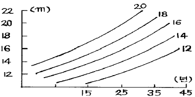
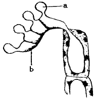
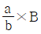
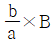
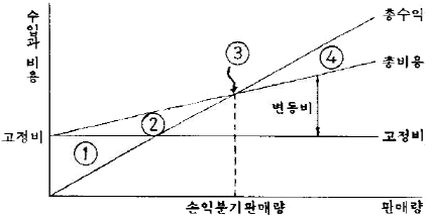
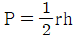
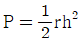

산림기사 (2006-03-05 기출문제)
1과목: 조림학
1. 다음 중 수목의 체내 이동이 어려워 생장점이나 어린 잎 등 세포 분열이 일어나는 곳에서 결핍증상이 잘 나타나는 무기양료 만으로 짝을 이루고 있는 것은?
- 질소 - 칼슘 - 칼륨
- 칼슘 - 철 - 붕소
- 철 - 망간 - 마그네슘
- 구리 - 마그네슘 - 질소
(정답률: 64%)

2. 암수 딴 그루인 3가지 수종들이 모두 올바른 것은?
- Ginkgo biloba, Cryptomeria japonica, Alnus japonica
- Alnus japonica, Taxus cuspidata, Pinus densiflora
- Pinus densiflora, Cryptomeria japonica, llex cornuta
- llex cornuta, Taxus cuspidata, Ginkgo biloba
(정답률: 66%)
3. 임지시비에 대하여 바르게 설명하고 있는 내용은?
- 항공시비에서는 가루 형태의 비료보다 굵은 입자 형태와 비료를 살포하는 것이 좋다.
- 임지시비의 시기는 노동력을 동원하기 쉬운 늦여름이나 초가을이 적기이다.
- 임시시비는 묘목을 식재한 이듬해의 가을에 1회 시비하는 것만으로 충분하다.
- 장령림에서의 시비는 뿌리가 땅속 깊이 뻗어있기 때문에 구덩이를 깊이 파고 시비해야 한다.
(정답률: 66%)
4. 다음 중 산림 생태계의 천이에 대한 설명으로 옳은 것은?
- 아극성상은 어떤 원인에 의해 극성상의 뒤에 올수 있다.
- 식생이 입지에 주는 영향을 식쟁의 반작용이라 한다.
- 식물의 이동은 천이의 원인이 될 수 없다.
- 우리나라 소나무림은 극성상에 있다.
(정답률: 46%)
5. 다음 중 우리나라 산림의 표토가 유실된 황폐임야의 토양 단면에 대해 설명한 것으로 가장 옳은 것은?
- A, B, C, D층의 구별이 뚜렷하다.
- A층만 뚜렷하고 B, C, D층의 구별이 어렵다.
- 층의 분화의 진전이 잘 되어있지 않다.
- B층이 뚜렷하고 A, C, D층이 불확실하다.
(정답률: 42%)
6. 다음 중 곤포당 본수가 가장 많은 것은?
- 이기테다소나무 묘령 2년
- 잣나무 묘령 2년
- 삼나무 묘령 2년
- 피나무 묘령 1년
(정답률: 34%)
7. 백화현상(위황증, chlorosis)과 관계가 없는 것은?
- 옥신(Auxin)
- 마그네슘(Ma)
- 질소(N)
- 백변종(Albino)
(정답률: 43%)
8. 우리나라서 종자결실이 5년 이상의 주기로 풍ㆍ흉이 있어서 풍ㆍ흉 예지의 주요 대상 수종인 것은?
- 오리나무
- 은행나무
- 낙엽송
- 대나무
(정답률: 53%)
9. 침엽수 인공림의 수형목 지정기준 중 옳지 않은 것은?
- 상층 임관에 속할 것
- 수간은 분지하지 않은 것
- 밑가지들이 말라서 떨어지기 쉽고 그 상처가 잘 아물 것
- 주위 정상목 10본의 평균보다 수고 5%, 직경 20% 이상 클것
(정답률: 49%)
10. 삽목묘는 삽목된 해로부터 나이를 계산하는데 줄기의 나이가 2년생 되는 삽목묘는?
- 2/3묘
- 1/1묘
- 3/2묘
- 1/4묘
(정답률: 62%)
11. 다음은 어떤 수종에 대한 지위지수곡선으로서 25년생을 기준 연령으로 한 것이다. 35년생으로서 평균수고가 약 15m 이라면 지위지수의 추정치는?

- 13
- 15
- 16
- 18
(정답률: 55%)
12. 다음 원소 중 다량원소(macroelement)에 해당되는 것은?
- Fe
- B
- Zn
- S
(정답률: 53%)
13. 식재밀도에 영향을 끼치는 인자를 기술한 것 중 가장 옳은 것은?
- 소경재 생산을 목표로 할 때는 그렇지 않을 때에 비해 소식한다.
- 땅이 비옥하면 성장 속도가 빠르므로 밀식한다.
- 노무사정 및 비용을 생각할 때는 밀식하는 것이 유리하다.
- 일반적으로 양수는 소식하고, 음수는 밀식한다.
(정답률: 69%)
14. 다음 중 산림토양이 산성화됨에 따른 피해 설명으로 적합하지 못한 것은?
- 수소이온이 뿌리에 흡수되어 단백질의 응고나, 효소의 작용을 방해한다.
- 토양용액 중에 활성 알루미늄의 농도가 높아져 묘목 생장에 장해가 된다.
- 토양에서 칼륨, 칼슘, 마그네슘 등의 양이온이 용탈된다.
- 토양의 입단구조가 발달하여 토양미생물의 생육에 유리하게 된다.
(정답률: 79%)
15. 다음 중 종자의 활력 검정방법(Viability test method)이 아닌 것은?
- 절단법
- 가열법
- 효소검출법
- 양건법
(정답률: 57%)
16. 다음 중 개화 3개월 후에 종자가 성숙하는 수종들로 바르게 짝지워진 것은?
- 아까시나무. 오리나무
- 버드나무, 사시나무
- 낙엽송, 참나무
- 소나무, 잣나무
(정답률: 63%)
17. 규칙적인 식재에서 ha당 묘목의 본수는 묘목 1본당 면적과 식재면적을 통하여 산출한다. 예를 들면 묘간거리 2m의 정발형 식재시 묘목 1본당 차지하는 면적은 4m2이므로 1ha에는 2,500본이 식재된다. 묘간거리 5m의 이중정방형 식재시 1ha에 식재되는 묘목의 본수는?
- 1,200본
- 1,000본
- 800본
- 400본
(정답률: 31%)
18. 소나무에서 파종상면적 500m2, 묘목잔존본수 600본/m2, 1g 당 평균입수 99립, 순량률 95%, 실험실 발아율 90%, 묘목 잔존률 30%일 경우 파종량은?
- 약 11.2kg
- 약 11.8kg
- 약 12.3kg
- 약 37.3kg
(정답률: 66%)
19. 수목 뿌리의 균근에 대한 설명 중 틀린 것은?
- 균근이 발생된 수목은 생장이 촉진된다.
- 균근이 발생하면 인산의 흡수률 방해한다.
- 균근은 뿌리에서 공생하는 미생물이다.
- 송이버섯은 외생균근에서 발생된다.
(정답률: 67%)
20. 다음 중 실생묘 생산을 위한 임목종자의 파종량 계산에 직접 적용되는 인자가 아닌 것은?
- 순량율
- 발아묘 생장율
- 실험실종자발아율
- 단위그램당 종자의 입수
(정답률: 55%)
2과목: 산림보호학
21. 다음 중 2차 해충으로 옳은 것은?
- 소나무좀
- 오리나무잎벌레
- 흰불나방
- 밤나무혹벌
(정답률: 49%)
22. 다음 중 1년에 가장 여러 번 발생하는 산림 해충은?
- 소나무좀
- 미국 흰불나방
- 솔나방
- 독나방
(정답률: 79%)
23. 다음 중 오동나무 빗자루병의 매개충인 담배장님노린재가 오동나무에 가장 많이 서식하는 시기는?
- 2월~3월
- 4월~6월
- 7월~9월
- 10월~11월
(정답률: 61%)
24. 다음 중 밤나무혹벌의 방제법으로 적당하지 않은 방법은?
- 성충 탈출전의 출영을 채취 소각한다.
- 천적인 기생복을 이용한다.
- 내충성 품종을 선택하여 식재한다.
- 등화유살법을 사용한다.
(정답률: 53%)
25. 다음 중 잣나무 털녹병균의 중간 기주를 제거하는데 가장 알맞은 시기는?
- 4월~8월말 이전
- 9월~11월
- 12월~1월
- 2월~3월
(정답률: 53%)
26. 다음 중 수목의 색깔이 변화하여 눈에 띄는 병징이 아닌 것은?
- 위황화
- 위축
- 청변
- 은백화
(정답률: 83%)
27. 다음 그림은 녹병균의 겨울포자가 발아한 모습이다 “a"는 어떤 포자인가?

- 담자포자(小生子)
- 녹포자(綠胞子)
- 여름포자(夏胞子)
- 자낭포자(子囊胞子)
(정답률: 38%)
28. 다음 중 수피가 평활하고 코르크층이 발달 되지 못한 수종에서 태양광선의 직사를 받았을 때, 수피의 일부에 급격한 수분 증발로 조직이 건고(乾枯) 되는 현상은?
- 상열(霜裂)
- 동상(冬霜)
- 열사(熱死)
- 볕데기(皮燒)
(정답률: 82%)
29. 다음 중 4~5월경 향나무 잎이나 가지 사이에 갈색의 혀 모양이 형성되는 향나무 녹병균의 포자는?
- 겨울포자
- 소생자
- 녹포자
- 여름포자
(정답률: 35%)
30. 다음 중 대기오염에 상대적으로 약한 수종은?
- 은행나무
- 벽오동
- 삼나무
- 사철나무
(정답률: 60%)
31. 다음 중 침엽수 모잘록병(立枯病)의 방제법으로 적당하지 않은 방법은?
- 토양 소독을 실시한다.
- 종자 소독을 실시한다.
- 배수와 통풍을 잘하여 준다.
- 파종량과 복토를 추가로 많이 한다.
(정답률: 73%)
32. 다음 중 곤충의 체벽 중에서 세포층으로 되어 있는 부분은?
- 진피층
- 외표피
- 원표피
- 기저막
(정답률: 57%)
33. 다음 중 산불 가운데 비화(spot fire)하기 쉽고, 한번 일어나면 불 끄기가 힘들어 큰 손실을 가져오는 것은?
- 지중화
- 지표화
- 수간화
- 수관화
(정답률: 61%)
34. 다음 중 생물적 방제에 가장 많이 쓰이는 것은?
- 선충류
- 곤충류
- 서류
- 응애류
(정답률: 50%)
35. 다음 중 임업해충의 피해 중 수량의 감소로 볼 수 있는 것은?
- 구멍이나 식흔은 재질 등급을 저하시킨다.
- 수지함량의 증가로 펄프재의 화학적 성질이 악화된다.
- 잎이 가해를 받으면 주로 비대 생장이 늦어진다.
- 펄프 섬유가 짧아지고 약해진다.
(정답률: 50%)
36. 다음 중 미국 흰불나방의 월동 형태로 가장 적당한 것은?
- 번데기로 나무 틈에서
- 유충으로 나무에서
- 알로 땅속에서
- 성충으로 땅속에서
(정답률: 60%)
37. 다음 중 성충과 유충(幼蟲)이 동시에 잎을 가해하는 것은?
- 솔잎혹파리
- 복숭아명나반
- 박쥐나방
- 오리나무잎벌레
(정답률: 48%)
38. 다음 중 암컷(雌蟲)만 있는 것은?
- 밤바구미
- 밤나무혹벌
- 솔나방
- 어스렝이나방
(정답률: 56%)
39. 다음 중 뿌리혹병균(근두암종병균)에 가장 감수성이 높은 것은?
- 소나무
- 잣나무
- 참나무
- 감나무
(정답률: 35%)
40. 다음 중 배설물을 밖으로 배출하지 않아 피해식별이 가장 어려운 해충은 어느 것인가?
- 밤바구미
- 복숭아명나방
- 밤애기잎말이나방
- 도토리거위벌레
(정답률: 60%)
3과목: 임업경영학
41. 이용객들과의 교류를 통하여 효과를 얻게 되는 휴양 마케팅의 활동에 포함되지 않는 사항은?
- 고객의 욕구를 충족시킬 수 있는 서비스의 개방
- 입장료 혹은 이용료의 산정
- 감시활동과 이용규제로 질서 확립
- 상품과 서비스의 효율적인 분배
(정답률: 46%)
42. 임목의 성장 과정을 정밀히 사정할 목적으로 수간석해를 하게 되는데 다음 중 틀린 것은?
- 벌채점의 위치는 흉고를 1.2m 로 했을 경우에는 지상 0.2m, 흉고를 1.3m로 했을 경우에는 지상 0.3m 되는 곳에 정한다.
- 원판의 채취는 지표부위로부터 매 2m 간격으로 실시한다.
- 원판의 측정은 측정을 원할하게 하기 위해서 측정전 우선 측정할 단면을 대패나 칼로 깍는다.
- 수간 석해도를 작성한다.
(정답률: 45%)
43. 자연휴양림의 조성관리 및 운영요령에서 휴양림의 설치기준으로 틀린 것은?
- 휴양 시설 설치에 따라 형질변경되는 산림면적은 휴양림 지정면적의 5% 이내로 한다.
- 휴양시설 중 건축물이 차지하는 총 면적은 휴양림 지정 면적의 0.5% 이하가 되도록 한다.
- 건축물의 높이는 3층 이하가 되도록 한다.
- 오수정화시서의 B.O.D. 의 방류수질기준은 20mg/L 이하가 되도록 한다.
(정답률: 16%)
44. 다음 중 야생 동ㆍ식물관련 법에서 지정하는 보호시설에 해당하지 않는 것은?
- 국립환경연구원
- 서식지외보전기관
- 농촌진흥청 농업과학연구원(식물류에 한함)
- 국립수산과학원(해양생물 및 수산생물에 한함)
(정답률: 31%)
45. 나무는 년수가 경과함에 따라 수고, 직경, 단면적이 증가하게 된다. 이와 같이 증가하는 것을 성장 또는 생장이라고 한다. 임목에 있어서 연년생장량은 무엇을 말하는가?
- 일정한 기간내에 현실적으로 생장한 양
- 1년 동안에 성장한 양
- 일정 기간내에 생장한 양
- 임령이 벌기에 도달했을 때의 생장량
(정답률: 77%)
46. 다음 중 수확조절의 조사법(照査法)과 관련이 가장 없는 것은?
- 실베(sylve)
- 택벌림
- 비오리(BIOLLEY)
- 윤벌기
(정답률: 44%)
47. 다음 중 법정 축적계산에 관한 설명으로 옳은 것은?
- 법정축적의 크기는 계절에 따라 균일하다.
- 노령임분이 벌채되기 직전의 축적(추계축적)이 가장 작다.
- 하계축적은 추계축적과 춘계축적의 평균축적으로 한다.
- 추계축적은 춘계축적에서 최노 임분재적을 뺀 것으로 한다.
(정답률: 55%)
48. 법정림의 내용이 아닌 것은?
- 법정영금 면적과 영급수를 가진다.
- 법정축적은 법정 토지의 관계를 가진다.
- 법정임분 배치는 주로 수확유지에 지장이 없도록 하는 소극적 요건이다.
- 법정생장량은 법정림의 1년간 생장량을 말한다.
(정답률: 4%)
49. 임목기말가와 경비의 관계가 옳은 것은?
- 경비가 많으면 임목기말가는 크다.
- 경비가 많으면 임목기말가는 작다.
- 경비가 적으면 임목기말가는 작다.
- 경비와 임목 기망가는 비례한다.
(정답률: 64%)
50. 미국의 재적 단위인 보드푸트 (b.f)란?
- 폭, 길이 각각 1푸트, 두께 1인치의 재적
- 폭, 길이 각각 1푸트, 두께 1푸트의 재적
- 폭 1인치, 길이와 두께 각각 1푸트의 재적
- 길이 1인치, 폭과 두께 각각 1푸트의 재적
(정답률: 54%)
51. 소나무 2등지의 평균시가를 B, 해당 소나무 임지의 중요 재종의 평균단가를 a, 평가하려는 지구의 지리급 Ⅱ의 소나무 2등지의 중요 재종의 평균단가를 b라면 이때의 소나무 2등지의 임지 가격을 구하는 공식은?


- (a-b)B
- (b-a)B
(정답률: 48%)
52. 휴양림의 산림상태, 입지조건 등을 고려하여 시설을 조성할 때 기준으로 틀린 것은?
- 산림욕장은 침엽수가 많고 경사가 완만한 산림을 대상으로 한다.
- 야영장은 자연배수가 잘 되는 지역으로서 산사태 등의 위험이 없는 안전한 곳에 설치하되 하천으로부터 6m 이상의 거리를 둔다.
- 숲속의 집은 자연재해의 위험이 없고, 일조량이 많은 지역에 남향으로 배치하되, 바깥의 조망이 가능하도록 창문을 낮고 넓게 한다.
- 숲속수련장은 강의실ㆍ숙박시설ㆍ광장 등을 갖추어야 하며, 30명 이상을 동시에 수용할 수 있는 규모로 한다.
(정답률: 20%)
53. 임목생산에 들어간 경비의 원리합계인 육림비를 적게 하는 방법이 아닌 것은?
- 작은 통나무의 판로를 개척한다.
- 임목생장을 촉진하는 기술도입을 한다.
- 간벌을 하여 부수입을 올린다.
- 노동력을 육림 초기에 대향 투입한다.
(정답률: 67%)
54. 매년 100,000원씩 조림비를 5년간 지불한다고 하면 연이율을 5퍼센트(%)로 할 때 마지막 지불이 끝났을 때의 후가는 얼마인가? (단, 1.⑤5=1.2763이다.)
- 1,250,000
- 2,500,000
- 638,150
- 552,600
(정답률: 40%)
55. 10년생의 임목재적이 0.020m3, 15년생의 임목재적이 0.030m3일 때, Pressler 공식에 의하여 생장률을 구하면 얼마인가?
- 6%
- 7%
- 8%
- 10%
(정답률: 48%)
56. 작업급의 영급 관계가 편중되어 노령림이 너무 많거나 유령림이 너무 많은 때 윤벌기로 구한 연벌량에서 오는 불이익을 적게 하여 수확량을 대략 균등하게 지속시키기 위해서 채택하는 생산기간은?
- 회귀년(回歸年)
- 갱신기(更新期)
- 개량기(改良期)
- 윤벌령(輪伐齡)
(정답률: 45%)
57. 취득원가가 60만원이고, 폐기할 때의 잔존가치가 10만원으로 추징되는 체인톱이 있다. 이 톱의 사용 가능 시간은 5만 시간인데 실제 작업시간이 5천 시간 일 때, 총 감가상각비를 작업시간비례법에 의하여 계산하면 얼마인가?
- 3만원
- 5만원
- 7만원
- 10만원
(정답률: 65%)
58. 다음 그림은 손익분기도표에 의한 손익의 분석을 나타낸다. 이 그림에서 이익을 나타내는 것은?

- ①
- ②
- ③
- ④
(정답률: 67%)
59. 다음 중 시장가 역산법으로 임목가를 평정할 때 필요치 않은 인자는?
- 조립 및 육림비
- 벌채 및 조재비
- 집재 및 운재비
- 운반지
(정답률: 54%)
60. 산림조사면적 1ha, 표본점 크기 10m×10m, 오차율 5%, 그리고 변이계수가 40일 때 최소한 몇 개의 표본점을 필요로 하는가?
- 72
- 75
- 80
- 81
(정답률: 30%)
4과목: 임도공학
61. 1/25,000 지형드상에서 산정표고가 225.75m, 산밑의 표고가 47.25m 인 사면의 경사는? (단, 산정부터 산밑까지의 지형도상의 수평거리는 5cm 임)
- 약 10%
- 약 12%
- 약 14%
- 약 16%
(정답률: 50%)
62. 다음 중 산지에서 임도의 기능을 완선하기 위하여 교량을 설치할 때 적합하지 않은 지점은?
- 지반이 견고하고 복잡하지 않은 곳
- 하상(河床)의 변동이 적고 하천의 폭이 협소한 곳
- 계류의 방향이 바뀌는 곳
- 교량이 하천 수면보다 높게 할 수 있는 곳
(정답률: 59%)
63. 다음 중 산림법에서 설계속도가 40km/hr의 특수지형의 종단기울기(순기울기) 기준으로 옳은 것은?
- 8% 이하
- 10% 이하
- 12% 이하
- 14% 이하
(정답률: 60%)
64. 다음 중 임도 노선 답사시 나타날 수 있는 시각적인 오차(시환)를 잘못 설명한 것은?
- 눈앞의 직선은 짧게 보이고, 먼 곳의 직선은 길게 보인다.
- 비탈진 지반에 서서 높은 곳을 보면 60°의 경사지는 거의 수직처럼 더 급하게 보인다
- 덤불이 무성한 지역은 공사하기 곤란하게 보인다.
- 고저 기복이 심하지 않거나 기울기가 완만한 곳은 공사하기 쉽게 보인다.
(정답률: 43%)
65. 다음 중 Matthews 최적 임도 밀도 이론의 원리를 가장 적절하게 설명한 것은?
- 임도비(임도개설비+유지비)와 운재비의 합계가 최대인 지점을 최적의 임도 간격으로 한다.
- 임도비(임도개설비+유지비)와 해당 지역의 기계화도를 고려하여 최적 임도 간격을 결정한다.
- 임도비(임도개설비+유지비)와 집재비의 합계가 최소가 되는 지점의 임도 간격을 적정 임도 간격으로 한다.
- 임도비(임도개설비+유지비)와 임목 축적량의 합계가 최소로 되는 지점에서 임도 간격을 결정한다.
(정답률: 52%)
66. 지하수가 유출되는 정토사면에 설치하는 가장 적합한 공작물은?
- 기슭막이
- 산복돌수로
- 돌망태공
- 집수정
(정답률: 40%)
67. 반출 목재의 길이 12m, 임도 노면 유효폭 3.0m일 때 반출재 길이기준으로 최소 곡반경을 계산한 것은?
- 6.0m
- 12.0m
- 18.0m
- 24.0m
(정답률: 50%)
68. 산림법에 의한 암석지의 절토경사면의 최대 기울기는 얼마인가?
- 1 : 0.3
- 1 : 0.5
- 1 : 0.8
- 1 : 1.2
(정답률: 41%)
69. 다음 중 산림법에서 설계속도 30km/hr의 일반 지형의 최소 곡선 반지름(m0으로 옳은 것은?
- 40m
- 30m
- 20m
- 10m
(정답률: 61%)
70. 일반적으로 흙쌓기는 시공 후에 시일이 경과하면 수축하여 용적이 감소 되고 시공면이 어느 정도 침하하므로 더쌓기(extra banking)을 해야 하는데 흙쌓기 높이의 어느 정도를 더 쌓아야 하는가?
- 4% 이내
- 5~10%
- 11~15%
- 16% 이상
(정답률: 69%)
71. 다음 중 산림법에서 쇄석ㆍ자갈을 부설한 임도에 있어서 횡단 기울기를 설치하여야 하는 기준은?
- 11~14%
- 6~10%
- 3~5%
- 0.5~2%
(정답률: 70%)
72. 갈수기에는 다리 밑으로 물이 흐르고 홍수기에는 다리 위로 흐르는 비교적 설치비용이 적고 계류의 폭이 좁을 때 설치하는 공작물은?
- 배수관
- 세월공
- 집수공
- 개거
(정답률: 45%)
73. 다음 중 일반적인 사면의 안정성 해석에 있어서 최소의 안전율로 가장 적합한 것은?
- 0.8~1.0
- 1.3~.4
- 2.0~3.5
- 4.0~6.0
(정답률: 14%)
74. 다음 중 CBR %의 조사 목적으로 가장 적합한 것은?
- 노체면을 롤러로 댜지는 횟수의 결정
- 노체 표면의 모래, 자갈로 포장하는 층의 두께 결정
- 임도의 년간 이용가능 횟수의 결정
- 노체 표면의 횡단배수구를 결정
(정답률: 44%)
75. 다음 중 쇄석도의 두께에 대하여 바르게 설명하고 있는 것은?
- 쇄석도의 두께는 10~20cm 이지만 20cm가 표준이다.
- 쇄석도의 두께는 15~25cm 이지만 15cm가 표준이다.
- 쇄석도의 두께는 10~20cm 이지만 30cm가 표준이다.
- 쇄석도의 두께는 10~25cm 이지만 20cm가 표준이다.
(정답률: 30%)
76. 다음 중 안전사고의 직접적인 발생원인으로 볼 수 없는 것은?
- 작업원의 잘못된 행동
- 장비의 정비 불량
- 부적합한 작업방법
- 열악한 작업 환경
(정답률: 56%)
77. 침식 등으로 부터 성토사면의 안정을 도모하기 위하여 사면 끝에 설치하는 공작물이 아닌 것은?
- 옹벽
- 돌기슭막이
- 견치석쌓기
- 줄떼공
(정답률: 50%)
78. 1,000 ha의 산림경영지에 임도밀도가 20m/ha 라 한다면 평균집재거리는 얼마인가? (단, 임도의 양쪽으로 임목을 집재 할 때)
- 500m
- 250m
- 125m
- 63m
(정답률: 17%)
79. 다음의 산림토목 시공용 기계 중 정지작업에 사용되는 기계는?
- 탬핑 로울러
- 모우터 그레이더
- 클램 쉘
- 파워 셔블
(정답률: 64%)
80. 통일분류법에 의하여 흙을 분류한 기호이다. 임도의 노반으로 가장 적당한 흙은?
- CL
- GW
- MH
- OH
(정답률: 50%)
5과목: 사방공학
81. 산지 사방공작물 중 콘크리이트벽 흙막이는 산비탈 붕괴지가 급하고, 하부에 외력에 의해 높이가 높으면 높을수록 위험하다. 시공시 원칙으로 하는 콘크리이트벽 흙막이의 높이는 몇 m 이하인가?
- 2m
- 3m
- 4m
- 5m
(정답률: 36%)
82. 흙구곡막이에서 제체를 축설하는 흙쌓기 비탈면의 표준 물매의 기준으로 옳은 것은?
- 대수면과 반수면이 다 같이 1 : 1.5 보다 완만하게 하여야 한다.
- 대수면과 반수면이 다 같이 1 : 1.5 보다 급하게 하여야 한다.
- 대수면은 1 : 1.5, 반수면은 1 : 1.0 으로 하여야 한다.
- 대수면은 1 : 1.0, 반수면은 1 : 1.5 으로 하여야 한다.
(정답률: 20%)
83. 비탈면의 식재에 관한 것으로 옳지 않은 것은?
- 식재한 수목이 만일 넘어진다 하여도 위험성이 없도록 해야 한다.
- 흙깍기 비탈면에서는 사면의 상단부에 식재함을 원칙으로 한다.
- 흙쌓기 비탈면에서는 사면의 하단부에 식재함을 원칙으로 한다.
- 비탈면에서는 교목(喬木)이나 대묘(大苗)를 식재하여 경관을 신속하게 형성시킨다.
(정답률: 54%)
84. 차폐수벽공법에서 수벽을 3열로 식재할 경우 가장 적당한 방법은?
- 중앙에 침엽수를 1열로 식재하고, 그 앞뒤에 활엽교목, 관목을 식재한다.
- 중앙에 활엽교목을 1열로 식재하고, 그 앞뒤에 침엽수, 관목을 식재한다.
- 중앙에 관목을 2열로 열식하고, 그 앞뒤에 교목을 식재한다.
- 중앙에 관목을 2열로 열식하고, 그 앞뒤에 관목을 식재한다.
(정답률: 60%)
85. 다음 중 경심과 관련 있는 것은?
- 수심
- 평균수심
- 유적
- 동수반지름
(정답률: 43%)
86. 콘크리트 혼합에서 골재 이외에 사용하는 혼합제로서 응결촉진 경화를 신속하게 할 목적으로 사용하는 재료는?
- 염화칼슘
- 규조토
- 규산백토
- 석회
(정답률: 60%)
87. 다음 사항 중 콘크리트 강도 증진에 해당되지 않는 환경 여건이나 그 방법은?
- 골재의 형상
- 공극의 다소
- 결빙 이하 온도
- 양생 방법
(정답률: 36%)
88. 다음 중에서 암석 비탈면이 아닌 것은?
- 경남 비탈면
- 사력 비탈면
- 연암 비탈면
- 풍화암 비탈면
(정답률: 60%)
89. 산림공사에서 사용되는 골재를 비중에 따라 분류할 경우 경량 골재는 비중이 어느 정도 이어야 하는가?
- 2.50 이하
- 2.60 이하
- 2.70 이하
- 2.80 이하
(정답률: 52%)
90. 콘크리트 수로 공작물은 현장 치기 시공에 따라 형상과 크기를 임의로 할 수 있는 장점이 있다. 콘크리트 수로의 일반적인 단면 형태는?
- 사다리꼴
- 활꼴
- U자꼴
- 삼각형꼴
(정답률: 69%)
91. 익류수심이 없는 경우에 사방댐에 작용하는 수압공식은?
- P=2rh
- P=rh


(정답률: 22%)
92. 다음 중에서 사방댐의 시공목적이 아닌 것은?
- 매토층 하부 및 수로의 지지
- 종횡침식의 방지
- 산각고정 및 산복붕괴의 방지
- 계상물매의 완화
(정답률: 54%)
93. 야계사방의 수로 개수에 있어서 계상물매(溪床勾配) 결정에 이용되는 임계유속(臨界流速, 根界流速) 이란?
- 물 위 표면 유속
- 수류 밑바닥 유속
- 계상침식을 일으키는 최소유속
- 계상에 침식을 일으키지 않는 경우의 최대 유속
(정답률: 70%)
94. 선떼붙이기 공법의 설명으로 틀리는 것은?
- 1m 당 때 사용 매수에 따라 1급~9급으로 나뉜다.
- 떼붙이기의 비탈물매는 대체로 1 : 0.5~0.7 정도가 적당하다.
- 1급 선떼붙이기로 갈수록 고급이다.
- 발디딤의 나비는 40cm 정도이다.
(정답률: 45%)
95. 비탈면 안정해석을 위해 산출하는 안정율에 관한 설명으로 옳은 것은?
- 비탈의 활동면에 대해 흙의 전단강도를 현재의 전단 응력으로 나눈 값
- 비탈의 활동면에 대해 흙의 전단응력을 현재의 전단 강도로 나눈 값
- 비탈의 활동면에 대해 흙의 압축강도를 현재의 압축 응력으로 나눈 값
- 비탈의 활동면에 대해 흙의 압축응력을 현재의 전단 강도로 나눈 값
(정답률: 60%)
96. 황폐계류의 특성에 해당하지 않는 것은?
- 유로 길이 길다.
- 물매가 급하다.
- 유량이 급증하거나 급감한다.
- 사역 유송이 심하다.
(정답률: 57%)
97. 해안사지 조림용 수종이 구비해야 할 조건이 아닌 것은?
- 양분과 수분에 대한 요구도가 많을 것
- 급격한 온도변화에 잘 견딜 것
- 바람에 대한 적응력이 클것
- 울폐력이 좋고, 지역을 증진시킬 수 있을 것
(정답률: 81%)
98. 유역면적이 10,000m2이고, 최대시우량이 150mm/hr 일 때 임상이 좋은 산림지역에서의 유량은? (단, 유거계수는 0.35이다.)
- 0.14 m3/sec
- 1.4m3/sec
- 14m3/sec
- 140m3/sec
(정답률: 39%)
99. 사방의 대상이 되는 가속침식의 형태가 아닌 것은?
- 물 침식
- 중력 침식
- 자연 풍화침식
- 바람 침식
(정답률: 32%)
100. 계상에서 유수의 소류력이 최소로 되고 안정물매가 최대로 되는 물매를 무엇이라고 하는가?
- 평형물매
- 편류물매
- 보정물매
- 홍수물매
(정답률: 20%)
칼슘은 세포 분열과 세포벽 형성에 필요하며, 철은 엽록소 합성과 호흡에 필요합니다. 붕소는 세포벽의 구성 성분 중 하나이며, 세포 분열과 성장에 필요합니다. 이들 무기양료가 결핍하면 생장점이나 어린 잎 등에서 결핍증상이 나타납니다. 따라서 이들 무기양료는 수목의 생장과 발달에 매우 중요합니다.